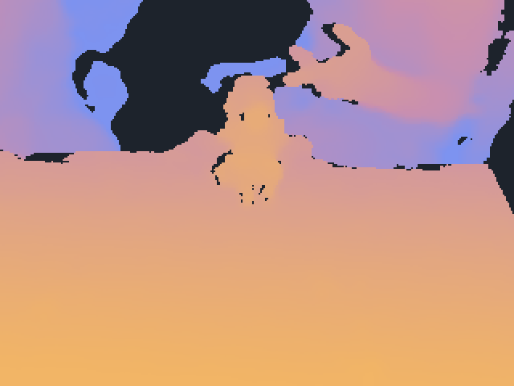

Tell it what to move where.
Claude drives a real robot arm by looking.
LLMs can't guess joint angles.
Code measures
Claude decides
One loop: look, decide, move
Colour finds it. Depth measures it.


The model is 2 cm off. We aim what the camera sees.
One call: look, correct, check, close.
- Approach
- Look
- Down
- Check
- Close
- Lift
It calibrates itself.
Every mistake became a rule.
Safe by design.
Where it stands
~1 cmlanding accuracy
3 of 4figures placed, live
8tools
0angles guessed by Claude
You say what. Claude does the rest.
Live demo